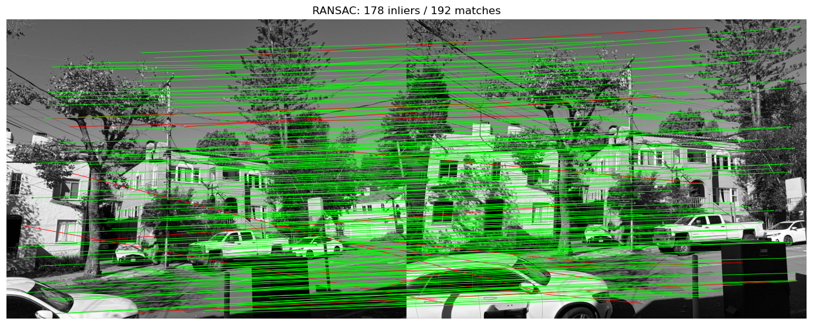
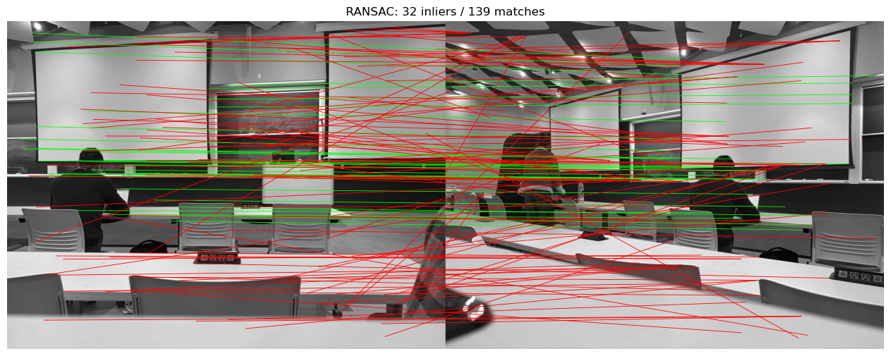
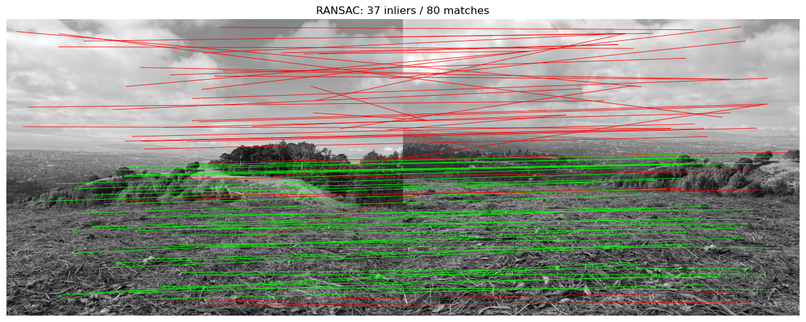
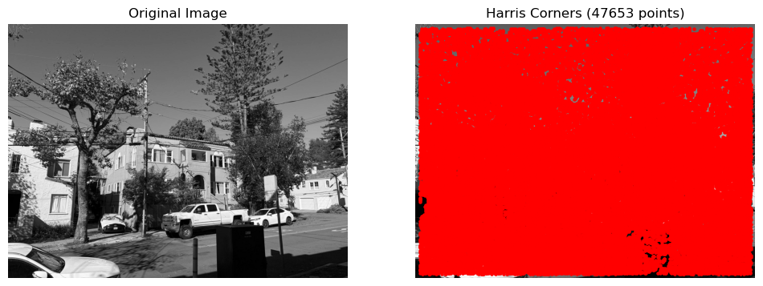
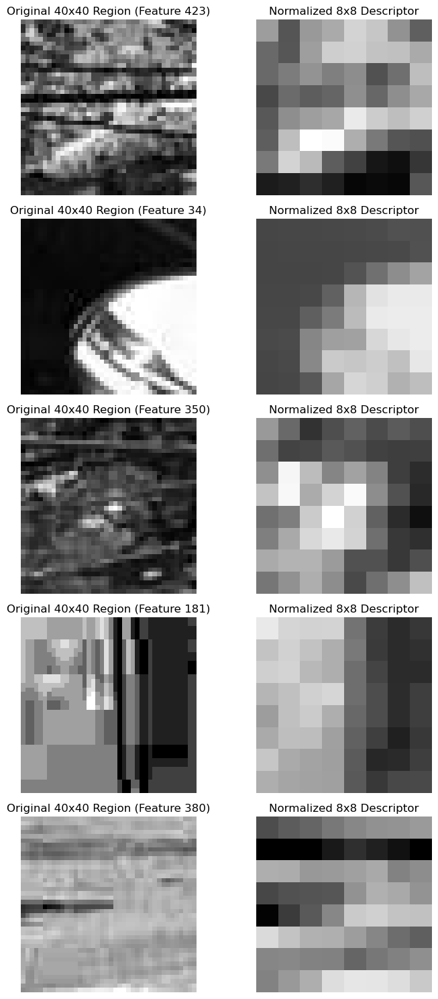
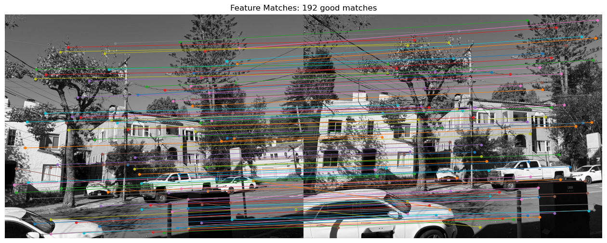
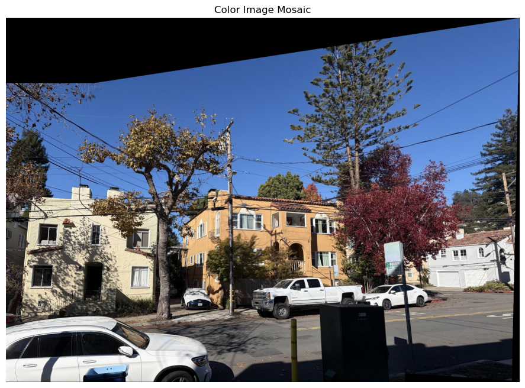
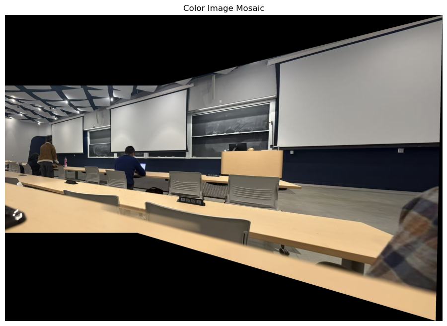
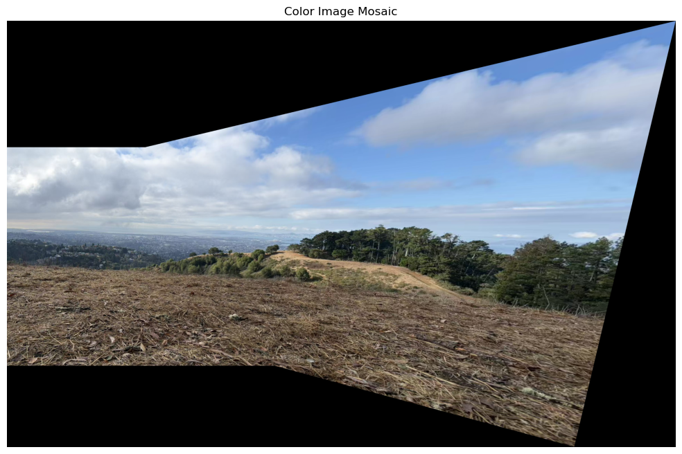

RANSAC correspondence filtering



Harris corners, MOPS-style feature descriptors, descriptor matching, and RANSAC homographies.
The Harris response produces a dense set of candidate interest points. Adaptive Non-Maximal Suppression (ANMS) retains strong corners that are distributed more evenly across the image.
For this street scene, Harris detection found 47,653 candidate points. ANMS selected 500 points based on response strength and distance to nearby stronger corners, reducing clusters and improving coverage for later matching.


For each interest point, a larger 40×40 image neighborhood is sampled and blurred before downsampling to an 8×8 grayscale descriptor. Each descriptor is then normalized to zero mean and unit standard deviation.
The larger sampling window preserves more stable local structure, while brightness and contrast normalization make the descriptors less sensitive to overall illumination changes. The figure shows several street-scene patches and their normalized descriptors.

Descriptor distances are compared between overlapping street photographs. Lowe's nearest-neighbor distance ratio rejects ambiguous candidate correspondences.
Ratio thresholding produced 192 likely feature matches. Lines connect corresponding locations in the two images; these candidates are then passed to RANSAC for homography estimation.

Four correspondence pairs are randomly sampled to estimate a homography. Inliers are counted using reprojection error, and the transform is re-estimated from the inlier set before mapping the images onto a shared canvas.
RANSAC was applied to three overlapping image pairs: the street scene, classroom, and hillside. The figures below show the inlier matches for each pair and the resulting automatic mosaics.






The manual mosaic uses correspondences selected by hand. The automatic result uses descriptor matches and a four-point RANSAC homography.

For CS180, the listed extensions are optional. Options include multiscale processing, rotation-invariant descriptors, and panorama recognition.
No extension results are included in the current Part B media, so this page does not claim an extension as completed. See Project 4A for additional manual homographies, image warping, and mosaics.